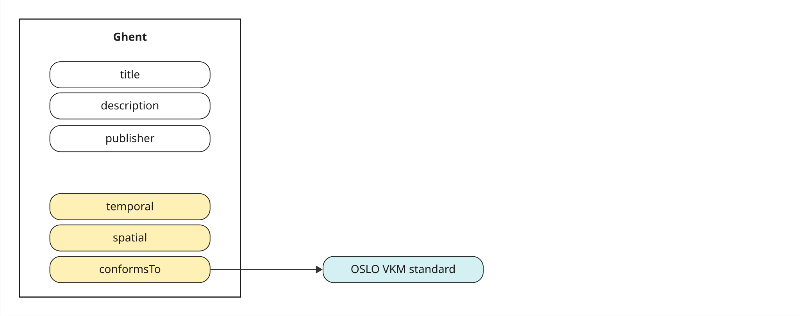
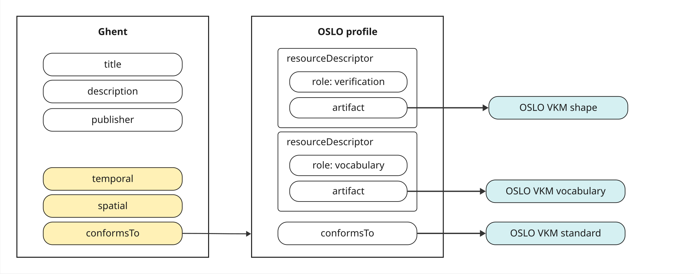
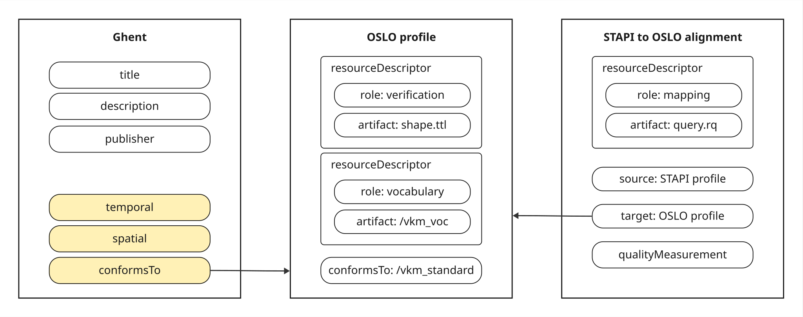
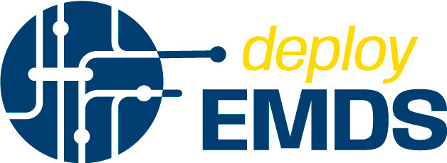
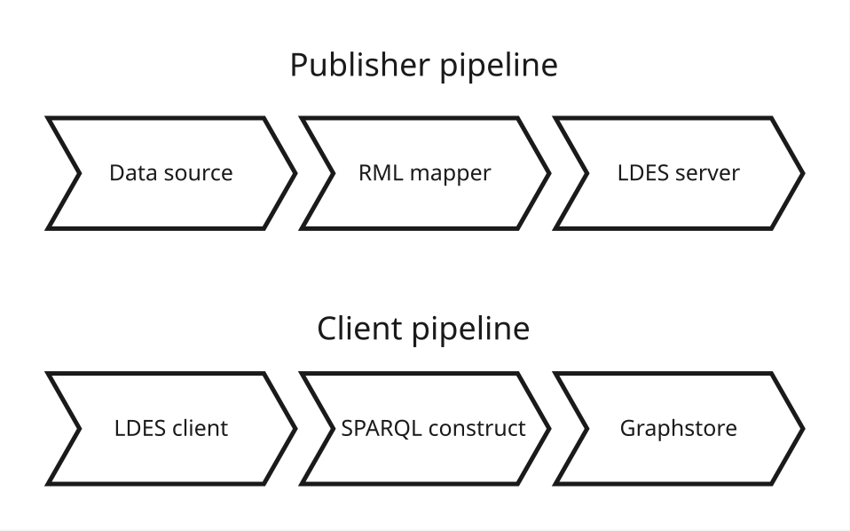

Data spaces are heterogeneous
-
Regional initiatives
- local publishing baselines (OSLO)
-
Established standards
- international interoperability(DATEXII)
-
Semantic alignment
- bridges the gap between heterogeneous models
The Vocabulary Hub
-
Semantic artifacts
- ontologies and specifications
-
Dataset alignments
- internal representations of tooling
-
Can we generalize alignments
to scale with the data space?
Dataset description
-
DCAT catalogs
- basis for discovery and interoperability
-
Application profiles
-
Standards internalize formats, schemas,
vocabularies, specifications, ...
Dataset description

Dataset profile
-
Unified profile
- declares internal and extended
conformance constraints of standards
-
Semantic artifact
- published by Vocabulary Hub
-
Profiles provide discoverability by
explicit linking of constraining resources
Dataset profile

Alignment artifact
-
Alignment profile
- from source to target profile
-
Executable mappings
- SPARQL Construct, RML, Notation3
-
Alignment artifacts enable automation
of integration pipelines by consumers
Alignment artifact

Artifact organization

Artifact organization

Artifact organization

Publishing datasets and profiles ...

with associated alignments ...

drives discovery and integration

Integrating traffic counts
-

-
-
Alignment of data to client-local data models
-
Automated integration through mapping pipelines
Automated integration through pipelines
-
Linked Data Event Streams
- replication and synchronization
-
RDF-Connect
- modular integration pipeline
-
Pipeline initialization based on
dataset and alignment discovery
DeployEMDS data pipeline

Coming to a data space near you?
-
Scaling behavior
-
Data interface definitions
- further automating pipeline creation
-
Integration of AI systems
- for discovery and generating alignments